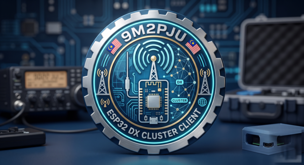

9M2PJU ESP32 DX Cluster Client
Flash firmware to your ESP32 board directly from your browser — no software install needed.
What is this?
A DX Cluster client for ESP32 boards with built-in screens. It connects to any DXSpider-compatible cluster server over Wi-Fi (telnet port 7300), receives live DX spots, and displays them on the screen. You configure it via a web page on your phone — no computer needed after the initial flash.
22 boards supported — LilyGO (T-Display-S3, T-Display, T-QT, T-HMI, T-Watch, T-Deck), M5Stack (Core, Core2, StickC Plus), Sunton CYD, Waveshare S3 Round, and 9 Heltec boards (WiFi Kit 32, WiFi LoRa 32, Wireless Stick, Wireless Tracker). All with built-in displays.
After flashing, the device becomes a standalone desk gadget (or wrist gadget if you have a T-Watch) that shows real-time amateur radio DX spots as they come in from around the world.
Before you start
| Browser | Supported | Notes |
|---|---|---|
| Google Chrome | Yes | Desktop & Android. Recommended. |
| Microsoft Edge | Yes | Desktop. Recommended. |
| Opera | Yes | Desktop. |
| Brave | Yes | Desktop. May need to enable Web Serial flag. |
| Mozilla Firefox | No | No Web Serial API support. |
| Apple Safari | No | No Web Serial API support. |
| iPhone/iPad (any browser) | No | iOS does not expose Web Serial. |
You will need:
- Your ESP32 board with a screen (see the board list below).
- A USB data cable (not a charge-only cable — many cheap cables only carry power).
- A Wi-Fi network (2.4 GHz — ESP32 does not support 5 GHz).
- Your amateur radio callsign.
- A DX cluster server address and port (default:
9m2pju.hamradio.my:7300).
Step 1 — Flash the firmware
Connect your board via USB
Plug your ESP32 board into your computer. Use a direct USB port if possible (avoid hubs).
Select your board below
Find your board in the list and click the Connect button on its card.
Choose the serial port
Your browser will show a list of serial ports. Select the one for your board:
Windows: COM3 (or similar), Mac: /dev/cu.usbserial-*, Linux: /dev/ttyUSB0
Click Install
Click Install and wait. Flashing takes about 30–60 seconds. Do not unplug during flashing.
Wait for reboot
After flashing, the board reboots automatically. The screen will show "9M2PJU DX Cluster Client" and then "SETUP MODE".
Select your board (22 supported):
Step 2 — Configure via the web admin UI
After flashing, the device boots into setup mode (because no Wi-Fi is configured yet). It creates a Wi-Fi hotspot that you connect to with your phone to enter your settings.
Find the setup Wi-Fi network
The screen shows a Wi-Fi name like 9M2PJU-DXCluster-A1B2. On your phone, open Wi-Fi settings and connect to that network.
Open the configuration page
A captive portal page should pop up automatically. If it doesn't, open any browser and go to http://192.168.4.1/
Fill in the form
Enter your Wi-Fi network (tap "Scan for networks" to see what's nearby), Wi-Fi password, your callsign, and the DX cluster server address.
Tap "Save & Reboot"
The device saves your settings, reboots, connects to your Wi-Fi, and starts showing DX spots.
Configuration form fields
| Field | What to enter | Example |
|---|---|---|
| Wi-Fi SSID | Your Wi-Fi network name (tap "Scan" to list nearby networks) | MyHomeWiFi |
| Wi-Fi Password | Your Wi-Fi password | supersecret |
| Callsign | Your amateur radio callsign | 9M2PJU |
| Callsign Password | Only if the cluster requires one. Leave blank if unsure. | (leave blank) |
| DX Cluster Host | The cluster server hostname or IP | 9m2pju.hamradio.my |
| DX Cluster Port | The cluster telnet port | 7300 |
| Post-login command | Optional. A command sent after login (advanced). | set/dx |
Step 3 — Using the device
The spot display
After configuration, the device connects to your Wi-Fi and the DX cluster. The display shows:
- Header bar — navy blue background with yellow text. Shows battery voltage/percentage (on boards with battery ADC, colour-coded: green/yellow/red), "9M2PJU DX Cluster Client" (truncated on small screens), a connection status dot (green = connected, red = disconnected), and the UTC clock.
- Spot list — scrolling list of recent DX spots, newest first. Each spot shows the frequency (colour-coded by band), DX callsign (yellow), spotter callsign (grey), and comment (grey).
Wide displays (T-Display-S3, M5Stack Core, Sunton CYD, T-HMI)
Small / round displays (T-QT, Waveshare round, T-Watch)
The button command menu
The BOOT button (GPIO 0, the same button used for flashing) opens a command menu in normal mode. You can send DX cluster commands without a computer or telnet client.
| Action | What happens |
|---|---|
| Short press (from spot view) | Opens the command menu |
| Short press (in menu) | Cycles to next command |
| Long press (hold ~1 second) | Sends the highlighted command |
| Short press (on response screen) | Closes response, returns to spots |
| 10 seconds of no input | Menu auto-closes |
Available commands
| Command | Description |
|---|---|
sh/dx | Show recent DX spots (refreshes the spot list) |
sh/dx 20 | Show last 20 spots |
sh/dx/ft8 | Show FT8 spots only |
sh/dx/cw | Show CW spots only |
sh/dx/ssb | Show SSB spots only |
sh/wwv | Show solar / geomagnetic conditions |
sh/muf | Show MUF (Maximum Usable Frequency) info |
sh/qtc | Show QTC bulletins |
sh/ann | Show recent announcements |
sh/u | Show users connected to the cluster |
sh/c | Show cluster links (partner nodes) |
sh/h | Show help |
Settings menu (triple-click)
Triple-click the BOOT button (3 quick presses within 800ms) from the spot view to open the settings menu. This gives you quick access to common operations without re-flashing or entering setup mode:
| Setting | Description |
|---|---|
| WiFi AP | Clears Wi-Fi config and reboots into setup mode (captive portal). Confirm with Yes/No. |
| Sleep | Enters deep sleep to save power. Wake by pressing BOOT. Confirm with Yes/No. |
| Restart | Soft reboots the ESP32. Confirm with Yes/No. |
| Brightness | Cycles through 4 backlight levels (64/128/192/255). Saved to NVS, restored on boot. Boards with backlight only. |
Re-entering setup mode
If you need to change your settings (e.g. you changed your Wi-Fi password or want to use a different cluster server), you can force the device back into setup mode at any time:
Setup mode also activates automatically if:
- The device boots with no Wi-Fi SSID saved (first boot after flashing).
- The configured Wi-Fi network cannot be reached within 30 seconds (e.g. wrong password, network down, you moved to a new location).
Troubleshooting
Serial port not detected / no port in the list
USB cable
Many USB cables are charge-only and don't carry data. Try a different cable — ideally one that you know works for data transfer (e.g. the cable that came with your phone).
USB hub
Plug directly into the computer, not through a hub. Some hubs block serial data.
ESP32-S3 boards: BOOT button trick
If you have an ESP32-S3 board (T-Display-S3, T-QT, T-HMI, T-Watch S3, Waveshare S3 Round, T-Deck, Heltec WiFi Kit 32 V3, WiFi LoRa 32 V3, Wireless Tracker) and the port doesn't appear:
- Unplug the board.
- Hold the BOOT button.
- Plug in the USB cable (keep holding BOOT).
- After 1–2 seconds, release BOOT.
- The port should now appear. Click Connect and select it.
Drivers
Most ESP32 boards use CP2102 or CH340 USB-to-serial chips. Modern OS versions include drivers, but if the port doesn't appear you may need to install:
CP2102: Silicon Labs VCP drivers
CH340: WCH CH340 drivers
Flashing fails or gets stuck
- Try a different USB cable and port.
- Close other programs that might be using the serial port (PlatformIO, Arduino IDE, serial monitors).
- If flashing gets stuck at "Erasing", try the BOOT button trick above to force the board into download mode.
- If it fails repeatedly, refresh the page and try again. The ESP Web Tools library is generally reliable but occasional glitches happen.
Screen is blank after flashing
- Wrong board selected? Make sure you selected the correct board for your hardware. Each board has a different display configuration. If you flashed the wrong firmware, re-flash with the correct board.
- Heltec OLED boards: The WiFi Kit 32, WiFi LoRa 32, and Wireless Stick use SSD1306 OLED displays via I2C. If the screen is blank, double-check you selected the right Heltec variant — V1/V2 boards (ESP32) and V3 boards (ESP32-S3) use different I2C pins.
- Heltec Wireless Tracker: Uses a TFT LCD (ST7735) via SPI, not OLED. Make sure you selected "Wireless Tracker" and not one of the OLED boards.
- T-Watch 2020: The display is powered by the AXP202 PMU. The firmware initializes it automatically, but if the battery is completely dead, plug in USB power and wait 10 seconds.
- Backlight too dim: The default brightness is 220/255. If your screen seems dark, try looking at it from different angles — some IPS panels look dark head-on. OLED boards (Heltec) don't have a backlight — they're always on at full brightness.
Can't connect to the setup Wi-Fi network
- The setup AP name is
9M2PJU-DXCluster-XXXX(last 4 characters are unique to your device). Look for a network starting with9M2PJU-DXCluster. - It's an open network — no password needed to connect.
- If you don't see it, the device might not be in setup mode. Hold BOOT + press RESET to force it.
- On some phones, you need to turn off mobile data for the captive portal to appear.
Captive portal page doesn't pop up
If you connect to the setup Wi-Fi but no page appears automatically:
- Open any web browser on your phone.
- Type
http://192.168.4.1/in the address bar. - The configuration form should load.
If that doesn't work either, try http://192.168.4.1 (without the trailing slash) or navigate to any website — the captive portal redirect should kick in.
Wi-Fi won't connect after configuration
- 2.4 GHz only: ESP32 does not support 5 GHz Wi-Fi. If your router is dual-band, make sure you selected the 2.4 GHz network name.
- Wrong password: Re-enter setup mode (hold BOOT + RESET) and try again. Wi-Fi passwords are case-sensitive.
- WPA3: Some ESP32 firmware versions have trouble with WPA3-only networks. If your router supports WPA2/WPA3 mixed mode, use that.
- Hidden SSID: The scan button won't find hidden networks. Type the SSID manually.
- Too far from router: The device falls back to setup mode if Wi-Fi doesn't connect within 30 seconds. Move closer to your router.
Connected to Wi-Fi but no spots appearing
- Check the connection dot: If it's orange, the device is still connecting to the cluster. If it stays orange for more than a minute, the cluster server might be down or unreachable.
- Check the cluster host and port: Re-enter setup mode and verify the settings. Default is
9m2pju.hamradio.myport7300. - Callsign rejected: Some clusters only accept registered users. The default placeholder is
N0CALL— make sure you entered your real callsign. - Cluster is quiet: If no one is spotting, there's nothing to show. Try sending
sh/dxvia the button menu to request recent spots. - Firewall: Some networks block port 7300. Try a different Wi-Fi network or check with your network admin.
Button menu doesn't work
- The BOOT button (GPIO 0) is used for the menu. On most boards this is the button labeled BOOT or IO0.
- The menu only works in normal mode (when the device is showing spots). It doesn't work in setup mode.
- Short press = quick click (less than 1 second). Long press = hold for at least 1 second.
- If the button is hard to reach on your board (e.g. inside a case), you may need to wire an external button to GPIO 0.
Forgot settings / want to start over
Hold the BOOT button while pressing RESET. The device boots into setup mode and you can enter new settings. The old settings will be overwritten when you save.
To completely wipe all settings, re-flash the firmware using the web flasher — this erases NVS and starts fresh.
FAQ
What is a DX Cluster?
A DX Cluster is a network of servers that relay "spots" — real-time reports of interesting amateur radio activity. When someone hears a rare station, they post a spot to the cluster, and it's immediately distributed to all connected operators. A spot looks like:
This tells you: station 9M2XYZ spotted JA1ABC on
frequency 14.074 MHz (20m band), the mode is FT8, the signal was
strong in Europe, and the spot was posted at 12:34 UTC.
This device connects to a DX cluster server and displays these spots on its screen in real time, so you can see what's being heard around the world without running a computer or telnet client.
What cluster servers can I use?
Any DXSpider-compatible cluster that speaks the standard telnet protocol on port 7300. This includes:
- 9M2PJU DXSpider Docker —
9m2pju.hamradio.my:7300 - Any public DXSpider node (search for "DX cluster list" online)
- CC Cluster and AR-Cluster servers (mostly compatible)
The default host is 9m2pju.hamradio.my but you can point the
device at any cluster server via the web admin UI.
Does it work with 5 GHz Wi-Fi?
No. The ESP32 only supports 2.4 GHz Wi-Fi (802.11 b/g/n). If your router is dual-band (2.4 + 5 GHz), connect to the 2.4 GHz network name.
Does it need a battery?
No. The device runs on USB power. Boards with batteries (T-Watch, M5StickC Plus, M5Stack Core2) will also run on battery — the firmware doesn't do anything special with battery power, but the display and Wi-Fi will work normally.
On boards with a battery ADC pin (T-Display-S3, T-Display, T-QT, T-HMI, T-Deck, Sunton CYD, Heltec boards), the display header shows battery voltage and charge percentage, colour-coded green/yellow/red. Boards with PMU-based battery (M5StickC, M5Stack, T-Watch) don't show battery info yet — the ADC pin is set to 255 (not supported) in the current firmware.
Can I change the settings without re-flashing?
Yes. Hold the BOOT button while pressing RESET to enter setup mode. The web admin UI lets you change Wi-Fi, callsign, cluster server, and all other settings. Changes are saved to NVS (flash memory) and persist across reboots.
Is my callsign/password sent securely?
The DX cluster protocol is plain telnet (unencrypted). This is standard for amateur radio DX clusters. The callsign is sent in plain text. The callsign password (if your cluster requires one) is also sent in plain text. This is the same as any telnet DX cluster client. The web admin UI (configuration page) is local — it only travels between your phone and the ESP32 over the setup Wi-Fi, not over the internet.
How much flash does the firmware use?
Typical flash usage is 25–30% on ESP32-S3 (16 MB flash) and 65–75% on ESP32 (4 MB flash). RAM usage is about 15% (48 KB of 320 KB). There's plenty of room for future features.
Can I build from source?
Yes. The project uses PlatformIO. Clone the repository, copy include/config.example.h to include/config.h, edit your defaults, and run pio run -e <your-board>. See the Developer Guide in the docs/ folder for full instructions.
How do I add support for a board that's not listed?
It takes about 30 lines of code. You need to create a board configuration file (LovyanGFX subclass with the display pins), add an entry in BoardConfig.h, and add a PlatformIO environment. See "Adding a New Board" in the docs/ folder for a step-by-step guide.